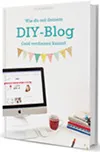

Wie kann ich mit meinem DIY-Blog Geld verdienen?
Produktprofil · Marktplatz-Daten 2026-10-14 · Verkaufsseiten-Recherche 2026-10-14 · Kategorien: Computer & Internet
- Wie kann ich mit meinem DIY-Blog Geld verdienen? ist ein/e Download in Computer & Internet, vertrieben über den Digistore24-Marktplatz von Anbieter kreativlaborberlin, gelistet seit 2017-04-18.
- Listenpreis $9.31 (single payment) — Checkout, Auslieferung und Rückerstattungen laufen über Digistore24 selbst, nicht über den Anbieter.
- Käuferschutz: keine standardisierte Garantie-Formulierung gefunden — Rückerstattungsbedingungen vor der Zahlung auf der offiziellen Seite prüfen.
Interesse an Wie kann ich mit meinem DIY-Blog Geld verdienen?? Aktueller Preis, Boni und Garantiebedingungen finden Sie auf der offiziellen Seite des Anbieters:
Offizielle Verkaufsseite ansehen
Affiliate-Link (Werbung) — wir verdienen ggf. eine Provision, ohne Mehrkosten für Sie.

Marktplatz-Daten
| Produkttyp | Download |
|---|---|
| Preis | $9.31 (Single payment) |
| Garantie/Rückgabe | Laut Verkaufsseite des Anbieters — vor dem Kauf auf der offiziellen Seite prüfen |
| Anbieter | kreativlaborberlin (gelistet seit 2017-04-18) |
Marktplatz-Beschreibung des Anbieters
160 Seiten im Format A4 als digitale PDF zum Sofort-Download (nach Zahlungseingang). Die PDF-Datei kann mit den gängigen PDF-Readern am PC, Mac oder Tablet gelesen oder auf A4-Papier ausgedruckt werden. Das erwartet dich in meinem Ebook: Ich zeige dir Schritt für Schritt wie du deinen DIY-Blog zum Erfolg führen und deinen ganz eigenen Stil entwickeln kannst. Du erfährst alles über Einnahmequellen speziell für DIY-Blogs und wie du diese in deinem Blog einbinden kannst. Außerdem verrate ich dir Tipps & Tricks zum Umgang mit Kooperationspartnern und wie du an spannende Projekte herankommst. Ich verrate dir, wie du das Beste aus deinen Fotos und Texten herausholen und herausragende DIY-Anleitungen, Ebooks und Druckvorlagen erstellen kannst. Du lernst außerdem wie du ein Gewerbe anmeldest, wie du deine Entwürfe schützen kannst und was die häufigsten Fehler von DIY-Bloggern sind. Zusätzlich findest du im Ebook zahlreiche Interviews mit erfolgreichen DIY-Bloggern und Unternehmen aus dem DIY-Bereich, die von ihre Erfahrungen mit der gegenseitigen Zusammenarbeit berichten und dir viele Tipps und konkrete Ratschläge mit auf den Weg geben. Mit dabei sind unter anderem: DaWanda.de, makerist.de, Snaply.de, Luisa von Luloveshandmade.com, Dani von gingeredthings.blogspot.de und viele mehr. Mithilfe des Ebooks kannst du deinen DIY-Blog aufs nächste Level heben und damit lukrative Kooperationen an Land ziehen. Lass dich inspirieren!
Von der Verkaufsseite des Anbieters
Wie Produkte dieser Art geliefert werden
Allgemeiner Hinweis zu diesem Produkttyp (keine anbieterspezifische Anleitung): Download-Produkte werden digital geliefert: sofort nach dem Checkout erhalten Sie Downloadlinks (oder Zugang zu einem Mitgliederbereich) — kein physischer Versand. Für die genaue Anwendung von Wie kann ich mit meinem DIY-Blog Geld verdienen? sind die offizielle Verkaufsseite und die enthaltenen Materialien maßgeblich.
Was ist Wie kann ich mit meinem DIY-Blog Geld verdienen??
Wie kann ich mit meinem DIY-Blog Geld verdienen? ist ein/e download in der Kategorie Computer & Internet des Digistore24-Marktplatzes, veröffentlicht von Anbieter kreativlaborberlin und im Verkauf seit 2017-04-18. Der Anbieter beschreibt es so: "160 Seiten im Format A4 als digitale PDF zum Sofort-Download (nach Zahlungseingang). Die PDF-Datei kann mit den gängigen PDF-Readern am PC, Mac oder Tablet gelesen oder auf A4-Papier ausgedruckt werden. Das erwartet dich in meinem Ebook: Ich zeige dir Schritt " (Marktplatz-Beschreibung des Anbieters, leicht gekürzt).
Wie kann ich mit meinem DIY-Blog Geld verdienen? Preis: was Sie zahlen
Der Marktplatz listet Wie kann ich mit meinem DIY-Blog Geld verdienen? zum $9.31 Preis (single payment). Digistore24 fügt im Checkout die gesetzliche Steuer Ihres Landes hinzu — dort sehen Sie den Endbetrag vor der Zahlung. Eine separate Plattformgebühr gibt es nicht; Anbieter können eigene Upsells nach dem Checkout anbieten.
Wie kann ich mit meinem DIY-Blog Geld verdienen? Rückerstattung und Geld-zurück-Garantie
Wir haben keine standardisierte Garantie-Formulierung auf der Verkaufsseite gefunden. Rückerstattungen für Digistore24-Käufe laufen über die Plattform: Antrag über den Support-Link in Ihrer Bestell-E-Mail, innerhalb des Garantiezeitfensters, das im Checkout angezeigt wird. Praktischer Rat: Entscheiden Sie innerhalb des Fensters — wenn das Produkt unter den Erwartungen bleibt, erstatten lassen statt irren lassen.
Mechanik im Detail: So funktionieren Digistore24-Rückerstattungen.
Für wen ist Wie kann ich mit meinem DIY-Blog Geld verdienen? geeignet?
Basierend auf der Computer & Internet-Einordnung und der single payment-Abrechnung richtet sich Wie kann ich mit meinem DIY-Blog Geld verdienen? an Käufer, die computer & internet-Lösungen suchen zum Einstiegspreis. Der ehrliche Test ist nicht die Kategorie, sondern Ihre eigene Situation: Werden Sie es realistisch innerhalb des Garantiefensters nutzen? Wenn ja, ist der Preis eine Investition; wenn nein, ist er Ballast — unabhängig von der Qualität.
Ist Wie kann ich mit meinem DIY-Blog Geld verdienen? seriös? Was Sie vor dem Kauf prüfen
Wir bewerten keine Seriosität — das kann niemand, ohne das Produkt zu nutzen. Prüfbare Punkte, alle auf dieser Seite: die Marktplatz-Historie des Anbieters (im Verkauf seit 2017-04-18), die wörtlichen Verkaufsseiten-Auszüge unten (gekennzeichnet als Anbieteraussagen — deren Werbung, nicht unsere Empfehlung), die Garantiebedingungen im Checkout und die Auslieferungsart. Vorsichtsignale bei jedem Angebot: Countdown-Dringlichkeit gepaart mit vagen Rückerstattungsbedingungen, Testimonials ohne Datum und Anbieterseiten, die den Preis bis zum Checkout verstecken.
Wie kommen Sie nach dem Kauf an Wie kann ich mit meinem DIY-Blog Geld verdienen??
Der Checkout läuft über Digistore24. Nach der Zahlung: Download-Produkte werden digital geliefert: sofort nach dem Checkout erhalten Sie Downloadlinks (oder Zugang zu einem Mitgliederbereich) — kein physischer Versand. Bewahren Sie die Bestell-E-Mail auf — sie ist Ihr Schlüssel zum/d zur download, zu Rückerstattungsanträgen und zum Digistore24-Käufersupport.
Wie kann ich mit meinem DIY-Blog Geld verdienen? Erfahrungen: so recherchieren Sie richtig
Die meisten „Erfahrungsberichte" zu Marktplatz-Produkten sind Affiliate-Inhalte — einschließlich Seiten wie dieser, die an Käufen mitverdienen. Behandeln Sie jeden Bericht (auch unseren) als Ausgangspunkt und prüfen Sie gegen Primärquellen: die Verkaufsseite des Anbieters, die Digistore24-Rückerstattungsrichtlinie und — für computer & internet — unabhängige Communities außerhalb des Affiliate-Ökosystems. Auf dieser Seite sind die Verkaufsseiten-Auszüge unten wörtlich zitiert, damit Sie die Aussagen des Anbieters bewerten können, ohne wegzuklicken.
Wie Sie Wie kann ich mit meinem DIY-Blog Geld verdienen? sicher kaufen
- Öffnen Sie die offizielle Verkaufsseite und lesen Sie das vollständige Angebot.
- Bestätigen Sie Endpreis und Garantiezeitfenster auf der Digistore24-Kassenseite — sie ist bindend, kein Vergleichsportal.
- Zahlen Sie innerhalb des Digistore24-Checkouts (niemals per Überweisung oder Off-Platform-Links).
- Speichern Sie die Bestellbestätigung; notieren Sie die Rückerstattungsfrist im Kalender.
- Prüfen Sie zügig. Der Digistore24-Käufersupport hilft, wenn der Anbieter nicht reagiert.
Vollständiges Recherche-Archiv für dieses Produkt (Markdown: kompletter Marktplatz-Datensatz + wörtliche Verkaufsseiten-Auszüge): Wie kann ich mit meinem DIY-Blog Geld verdienen? — vollständiges Datenarchiv (Markdown-Datei: 16717-wie-kann-ich-mit-meinem-diy-blog-geld-verdienen.md).
- Listenpreis & Abrechnung — Quelle: offizielle Digistore24-Marktplatz-API, Stand 2026-10-14. Maßgeblich für den aktuellen Preis ist immer die Kassenseite.
- Verkaufsseiten-Zitate — Quelle: https://www.kreativlaborberlin.de/wie-kann-ich-mit-meinem-diy-blog-geld-verdienen/, abgerufen 2026-10-14 (Methode: rohes HTML). Verify: offizielle Seite öffnen.
- Garantie / Rückgabe — vom Anbieter festgelegt; vor dem Kauf auf der Verkaufsseite bestätigen.
- Nicht von uns geprüft: Produktqualität, Ergebnisse, Testimonials — kein Praxistest für dieses Listing durchgeführt.
Häufige Fragen zu Wie kann ich mit meinem DIY-Blog Geld verdienen?
Antworten aus dem Marktplatz-Snapshot (2026-10-14) und der Verkaufsseiten-Recherche (2026-10-14); Anbieteraussagen sind inline gekennzeichnet.
Was ist Wie kann ich mit meinem DIY-Blog Geld verdienen??
Wie kann ich mit meinem DIY-Blog Geld verdienen? ist ein Angebot des Typs „Download" im Digistore24-Marktplatz, Anbieter: kreativlaborberlin, gelistet seit 2017-04-18. Eingepflegt unter Computer & Internet. Digistore24 wickelt Checkout, Lieferung und Rückgaben ab.
Wie viel kostet Wie kann ich mit meinem DIY-Blog Geld verdienen??
Der Digistore24-Marktplatz listet es für $9.31 (single payment). Preise legt der Anbieter fest und können sich ändern — der Marktplatz-Eintrag oben zeigt den Schnappschuss; die offizielle Verkaufsseite zeigt den aktuellen Preis.
Gibt es eine Geld-zurück-Garantie für Wie kann ich mit meinem DIY-Blog Geld verdienen??
Unsere Verkaufsseiten-Recherche hat keine explizite Garantie-Formulierung gefunden. Viele Digistore24-Produkte bieten 60 Tage Geld-zurück, aber das legt jeder Anbieter selbst fest — bestätigen Sie es auf der offiziellen Verkaufsseite, bevor Sie kaufen.
Ist Wie kann ich mit meinem DIY-Blog Geld verdienen? seriös?
Wir bewerten keine Seriosität — wir veröffentlichen überprüfbare Zahlen: Anbieter kreativlaborberlin (gelistet seit 2017-04-18), mit der vollständigen Verkaufsseiten-Recherche archiviert auf dieser Seite (Anbieteraussagen als solche gekennzeichnet). Lesen Sie unsere 6-Punkte-Bewertungsmethode und entscheiden Sie anhand der Zahlen — oder diskutieren Sie Wie kann ich mit meinem DIY-Blog Geld verdienen? auf GitHub.
Wo kann ich Wie kann ich mit meinem DIY-Blog Geld verdienen? sicher kaufen?
Nur über die offizielle Verkaufsseite, die auf dieser Seite verlinkt ist (Checkout und Rückgaben laufen über Digistore24). Prüfen Sie dort Preis und Garantie vor der Bestellung. Der Link ist ein Affiliate-Link — der Kauf unterstützt diese Website ohne Mehrkosten für Sie.
Wie erhalte ich Wie kann ich mit meinem DIY-Blog Geld verdienen? nach der Zahlung?
Der Checkout läuft über Digistore24: Nach der Zahlung erhalten Sie Ihren Zugang oder Download per E-Mail und in Ihrem Digistore24-Kundenkonto. Lieferdetails für diesen Produkttyp: Download-Produkte werden digital geliefert: sofort nach dem Checkout erhalten Sie Downloadlinks (oder Zugang zu einem Mitgliederbereich) — kein physischer Versand. Bei Problemen kann der Digistore24-Käufersupport Ihre Bestellung wiederherstellen.
Alle 50 Käuferfragen zu Computer & Internet — das komplette Kategorie-FAQ.
Wie kann ich mit meinem DIY-Blog Geld verdienen? auf Reddit diskutieren
In Community-Threads vergleichen echte Käufer Erfahrungen. Wir verlinken Communities, keine einzelnen Posts — Threads verschwinden, Subreddits bleiben:
- r/de_EDV — deutschsprachige Community mit Diskussionen zu computer & internet.
- Reddit-Suche nach „Wie kann ich mit meinem DIY-Blog Geld verdienen?" — Live-Ergebnisse, von uns nicht beeinflusst.
- Top-„Erfahrungs"-Treffer dieses Jahr — selbst nach Aktualität filtern.
Passendes auf Amazon.de
Physische Produkte und Zubehör, die häufig zusammen mit Wie kann ich mit meinem DIY-Blog Geld verdienen? gekauft werden:
- Software auf Amazon.de — Top-Ergebnisse, Amazon-Ranking.
- Bestseller: Software — live Liste von Amazon, von uns nicht kuratiert.
Werbung: Als Amazon-Partner verdient DigistorePicks DE an qualifizierten Käufen (Partner-tag adminstorede-21). Amazon setzt eigene Preise und Provisionen (niedrige einstellige Prozente — weit unter den 30–75% der Digistore24-Anbieter). Amazon ist ein Convenience-Angebot für Sachprodukte, kein Ersatz für das digitale Produkt oben.
Ähnliche Angebote in Computer & Internet

Expert Scaling System — Das komplette System für automatisierte Onlinekurs- und Coaching-Verkäufe. Für Coaches, Trainer und Berater. Kurzbeschreibung: 997€-Komp

Mehr Sichtbarkeit. Mehr Vertrauen. Mehr Umsatz. Mit „ Reich mit Weite – KI Edition “ verkaufst du ein Produkt, das Menschen zeigt, wie sie ohne Werbung, aber mi

Viele haben ein gutes Angebot – aber verkaufen es „nett“ statt überzeugend. Das Viele haben ein gutes Angebot – aber verkaufen es „nett“ statt überzeugend. Das

Zencaptcha schützt Webseiten vor Spam und betrügerischen Aktivitäten. Falsche und temporäre E-Mail-Adressen werden erkannt und Bots werden herausgefordert, noch
Ähnliche Preislage in Computer & Internet

NEU Verschenke das Super-Affiliate Secrets Bundle und verdiene bis zu 208,06 € Pro Klick und Interessent Deine Vorteile - Werbemittel (hier klicken): Verkaufspr

Passives KI Affiliate Marketing 2025 – Low-Budget Funnel mit High-Price Backend & 50 % Provision Jetzt Affiliate werden und von einem bewährten Low-Budget-F

Affiliate Quiz AI – Launch-Angebot Verwandle Links in Erlebnisse. Hör auf, nackte Affiliate-Links zu verbreiten, die ignoriert oder gesperrt werden. Erstelle in

Hunter Disk Cleaner ist ein modernes, rasend schnelles und schlankes Tool zur Festplattenbereinigung für Windows. Spüren Sie versteckte, überflüssige Dateien si
Ähnliche Suchanfragen
Wo Sie es sich ansehen können
Wo Sie es sich ansehen können
Aktuelle Preise, Garantie und Boni finden Sie auf der offiziellen Verkaufsseite:
Offizielle Verkaufsseite ansehen
Das ist ein Affiliate-Link (Werbung) — kaufen Sie darüber, verdienen wir ggf. eine Provision, ohne Mehrkosten für Sie.
Quellen & weiterführende Informationen
- Offizielle Verkaufsseite (aktueller Preis, Garantie, Boni): www.kreativlaborberlin.de/wie-kann-ich-mit-meinem-diy-blog-g (Affiliate-Link)
- Öffentliche Digistore24-Produktseite: checkout-ds24.com/product/132869
- Vollständige Recherche-Datei (Markdown, versioniert): content/products/16717-wie-kann-ich-mit-meinem-diy-blog-geld-verdienen.md
- Affiliate-Supportseite des Anbieters: www.kreativlaborberlin.de/affiliate-programm-fuer-meine-eboo
- Marktplatz-Kategorie: Computer & Internet
Wie wir Produkte wie Wie kann ich mit meinem DIY-Blog Geld verdienen? bewerten
Sechs Prüfungen, ausschließlich mit offiziellen Marktplatz-Zahlen. Die vollständige Bewertungsmethode lesen · unsere Recherche-Standards & Kennzeichnung.
Fragen oder eigene Erfahrungen mit Wie kann ich mit meinem DIY-Blog Geld verdienen??
Praxis-Tests veröffentlichen wir erst, nachdem wir ein Produkt selbst gekauft haben — aber Ihre Erfahrung hilft anderen Lesern: Diskussion zu Wie kann ich mit meinem DIY-Blog Geld verdienen? auf GitHub starten/verfolgen. Falsche Zahl gefunden? Korrektur melden — jede Seite zeigt ihre Datenstände, Korrekturen gelten für die ganze Website.